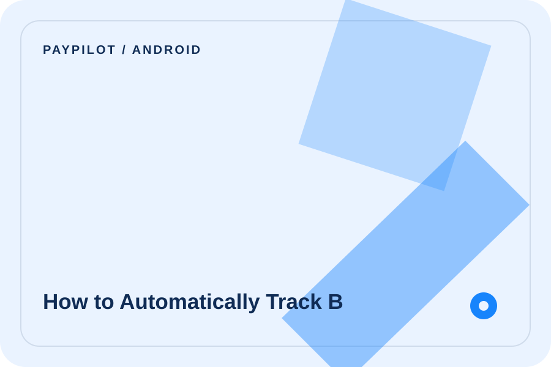

How to Automatically Track Bank Notifications on Android
Understand notification access, supported payment apps, duplicate alerts, and privacy controls on Android.

Quick answer
Android users who want automatic capture without connecting a bank account. For this kind of money workflow, the useful test is whether the tool reduces repetitive work while keeping your records explainable. It should show the important context behind a transaction instead of turning your finances into a black box.
The useful test: Can you understand what happened, correct it when needed, and see how it affects the rest of the month?
What to look for
Before choosing a tool, check whether it supports the details that make your money life different from a generic demo:
- Android expense tracker
- notification listener finance app
- bank notification tracker
- automatic UPI tracking Android
Notification access scope, supported bank and UPI apps, debit/credit filtering, duplicate handling, and a permission switch. The best choice is usually the one that makes these details visible without forcing you into a complicated setup.
A practical way to approach it
Grant access only after reading the app explanation, start with a few transactions, and remove permission if the results are not trustworthy.
- Collect one complete period of transactions, including cash, recurring bills, and transfers.
- Separate money going out from money moving between your own accounts.
- Review categories and merchants, then correct the few records that need context.
- Use the result to choose one small change for the next period.
Where PayPilot fits
PayPilot is designed as a local-first personal finance organiser for expenses, payments, subscriptions, loans, reminders, and income. It supports manual records and, where the device flow allows it, automatic capture from bank messages, notifications, or Apple Pay Shortcuts.
The app keeps the original transaction context, supports multiple currencies, and gives you a way to review monthly outflow, commitments, repayments, and—when enabled—money coming in. Availability depends on your device, operating-system permissions, and the specific payment alert.
Capture
Reduce repetitive entry while keeping manual correction available.
Understand
See categories, recurring commitments, loans, and cash flow together.
Control
Keep permissions, sync, export, and deletion choices visible.
Frequently asked questions
What should I look for when choosing android bank notification expense tracker?
Look for the workflow that matches your real payments: notification access scope, supported bank and upi apps, debit/credit filtering, duplicate handling, and a permission switch. The right tool should be understandable, editable, and easy to keep current.
Can PayPilot replace my bank statement or financial adviser?
No. PayPilot is an organisation and tracking tool. Keep official statements and use a qualified professional for personalised financial, tax, or investment advice.
How do I get started with android bank notification expense tracker?
Start with one month of records, add your recurring commitments, and review the result once a week. Grant access only after reading the app explanation, start with a few transactions, and remove permission if the results are not trustworthy.
Important: PayPilot is a tracking and organisation tool, not a bank, lender, tax adviser, or investment adviser. Verify important information against official records.